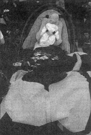
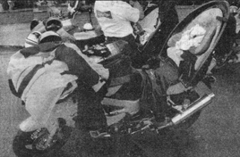

C'est lui notre genie du Québec, inventeur du siège Ovak

Vue d'un autre angle
|
C'est lors de la parade du Moto-Mondial que j'ai fait l'agréable rencontre de Michel Martin, I'inventeur du siège Ovak. Il faut dire que son arrivée n'est pas passée inaperçue puisqu'il était accompagné de plusieurs amis... et enfants.
Toutes les motocyclettes du groupe étaient munies du fameux siège Ovak. En un rien de temps, ils ont été pris d'assaut par plusieurs motocyclistes, tous intrigués par ce drôle de siège.
Pourquoi un tel siège? Motocycliste averti depuis 37 ans déja, notre homme ne pouvait concevoir la vie sans sa moto. Pourtant un évenement heureux allait lui ramener les deux pieds sur terre: un enfant. Sa vocation paternelle s'étant manifestée tardivement, notre homme se mit donc à I'ouvrage. Il fallait absolument trouver une solution à son problème pour lui permettre de combiner ses deux passions. Comme plusieurs autres motocyclistes, la fameuse ceinture pour enfant disponible sur le marché ne lui plaisait guère et consacra donc trois ans de travail acharné à son projet: le siège Ovak.
|

Voilà à quoi ressemble une moto sport munie du fameux siège
|
Ce fameux siège est construit en thermo-plastique et fibre de verre. Il peut transporter un passager d'un poids de 25 à 100 livres de façon confortable et sécuritaire sur une motocyclette comme sur une motoneige. Sa coquille intérieure est faite de fibre de Kevlar et elle se libère en cas d'impact. De plus, sa forme ovale lui donne une très grande résistance aux chocs. Le passager est bien retenu par trois sangles ajustables et les coussins sont très confortables et faciles d'entretien. Le siege, quant à lui, est fixé à la motocyclette à l'aide de six sangles robustes. Il peut étre installé Sur tous les modèles de motocyclettes.
|
Son prix de détail suggéré est de $699 et plusieurs accessoires sont aussi disponibles. Vous pouvez vous procurer le siège Ovak en composant le 1-450-546-9091, par fax au 1-450-546-3492 et par courriel au info@moto-inov.com.
Chapeau à ce créateur québécois! |
|